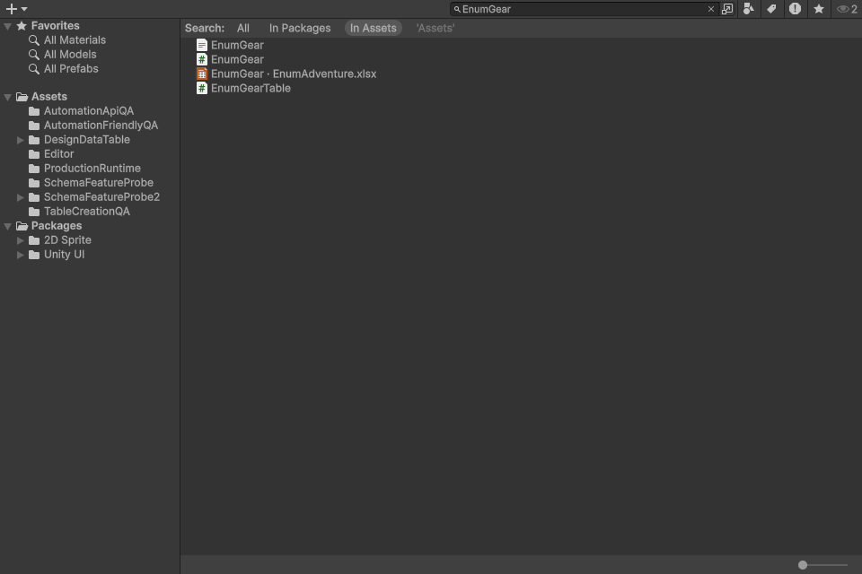

원본 검색·코드 주석과 간격 정리
EnumGear 검색에 원본 XLSX 시트 링크가 함께 표시됩니다. 여러 데이터 테이블을 한 원본 파일에 두는 구조를 유지합니다.

생성 코드 예시
/// <summary>
/// Loads rows through the configured asynchronous binary provider.
/// </summary>
public async System.Threading.Tasks.Task LoadAsync()
{
_datas = await DataLoader.ReadBinaryDictionaryAsync<EnumGear>(Name, Key);
}
/// <summary>
/// Replaces loaded rows by decoding the supplied binary bytes using this table's key.
/// </summary>
public void Load(byte[] bytes)
{
_datas = DataLoader.ReadBinaryDictionary<EnumGear>(bytes, Key);
}
/// <summary>
/// Loads binary bytes from an asset and rejects a missing asset.
/// </summary>
public void Load(UnityEngine.TextAsset asset)
{
if (asset == null)
{
throw new System.ArgumentNullException(nameof(asset));
}
Load(asset.bytes);
}
/// <summary>
/// Releases loaded rows so the next access reads the table again.
/// </summary>검증
| 항목 | 결과 |
|---|
| 소유CSharp파일 | 448 |
| 문서대상선언 | 5156 |
| XML요약누락 | 0 |
| 재생성테이블 | 24 |
| 바이너리변경 | 0 |
| 검색및연결검사 | 41 |
| 갱신생성코드파일 | 54 |
XML 문서 생성 컴파일 및 Windows 예제 플레이어 빌드: 오류·경고 0개.
검색·재생성 검사
- Generated API update preserves binary data: SampleCharacter
- Generated API update preserves binary data: SampleShopProduct
- Generated API update preserves binary data: SampleDropItem
- Generated API update preserves binary data: SampleSkill
- Generated API update preserves binary data: MiniGameBalance
- Generated API update preserves binary data: EnumGear
- Generated API update preserves binary data: EnumEnemies
- Generated API update preserves binary data: ThreeDSettings
- Generated API update preserves binary data: CanyonSettings
- Generated API update preserves binary data: SkyboundSettings
- Generated API update preserves binary data: DefenseSettings
- Generated API update preserves binary data: GolfSettings
- Generated API update preserves binary data: BowlingSettings
- Generated API update preserves binary data: WarehouseSettings
- Generated API update preserves binary data: DroneSettings
- Generated API update preserves binary data: MarbleSettings
- Generated API update preserves binary data: LanderSettings
- Generated API update preserves binary data: CourierSettings
- Generated API update preserves binary data: PotionSettings
- Generated API update preserves binary data: RhythmSettings
- Generated API update preserves binary data: BlocksSettings
- Generated API update preserves binary data: PinballSettings
- Generated API update preserves binary data: ExampleEquipment
- Generated API update preserves binary data: ExampleEnemies
- Two searchable sheet links share one original XLSX
- Original main object remains TextAsset
- Project name search returns original workbook: EnumGear
- Project name search returns original workbook: enumgear
- Project name search returns original workbook: EnumEnemies
- Project name search returns original workbook: EnumAdventure
- Search result accepts registered target: EnumEnemies
- Search result resolves exact source/sheet: EnumEnemies
- Search-only object excluded from player data
- Search result accepts registered target: EnumGear
- Search result resolves exact source/sheet: EnumGear
- Search-only object excluded from player data
- Search link identity survives reimport
- Detach one worksheet registration
- Only detached table search link disappears
- Detached table no longer matches original workbook
- Import/search/detach checks preserve original XLSX bytes
범위
- 비표시 실제 Unity ProjectBrowser·Inspector를 캡처했습니다. OS 화면 조작은 하지 않았습니다.
- 원본 검색은 XLSX 내부의 등록 테이블 이름에 적용합니다. 별도 원본 엑셀을 복제하지 않습니다.
- 클래스·메서드·생성자·속성·공개 필드 등의 XML 요약을 확인했습니다. 로컬 함수는 CS1587 경고를 피하기 위해 일반 주석을 사용합니다.
- 주석·공백 처리 단계에서는 에디터/입력 심볼을 켜고 끈 실행 토큰을 대조했습니다. 검색 기능과 생성 템플릿의 의도된 변경은 별도입니다.
- Windows 예제 플레이어 빌드가 성공했습니다. 이번에 모든 게임을 다시 수동 플레이했다는 의미는 아닙니다.
- 일부 기존 설명과 워크북에서 제공된 설명은 보존했습니다. 모든 주석을 사람이 독립적으로 검수했다고 주장하지 않습니다.
상세 근거: CodeAudit/Audit.json / Native/Results.json / Native-Final / PlayerBuild/Result.txt / Docs/LocalizedDocs.json